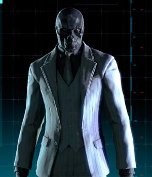

MÁSCARA NEGRA
Roman Sionis, um ex-executivo de negócios e chefe da máfia que
originalmente odiava Bruce Wayne em vez de Batman, usa uma máscara
de madeira preta e lidera a Família do Crime Sionis, também conhecida
como False Facers. Máscara Negra eventualmente se tornou um chefe da
máfia controlando grandes seções do submundo criminoso de Gotham City.
Após a morte suspeita de seus pais multimilionários, Sionis herdou sua
fortuna e levou sua empresa à falência. Salvo por uma compra de Bruce
Wayne, Sionis passou a se ressentir e odiar Wayne. Fixado no conceito
de máscaras, Sionis esculpiu uma do caixão preto de seu pai e buscou
vingança; sua batalha subsequente com o Cavaleiro das Trevas fez com
que sua máscara fosse queimada em sua pele, refazendo-o como a Máscara Negra.
Sionis agora é um temido líder de gangue e um dos chefes da máfia mais poderosos
de Gotham, com um ódio ardente por Batman.